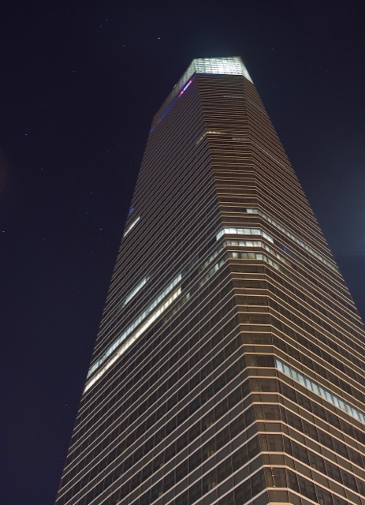
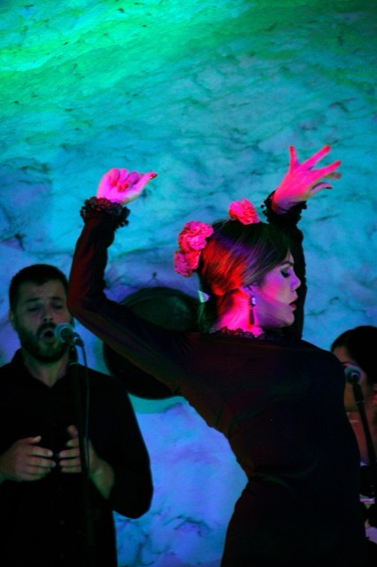
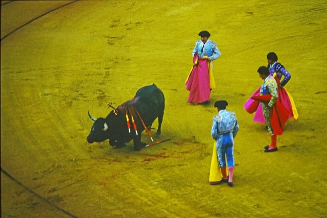
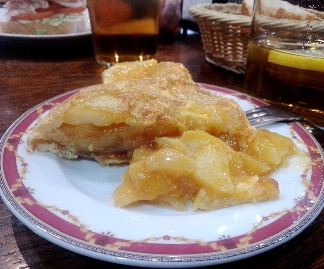
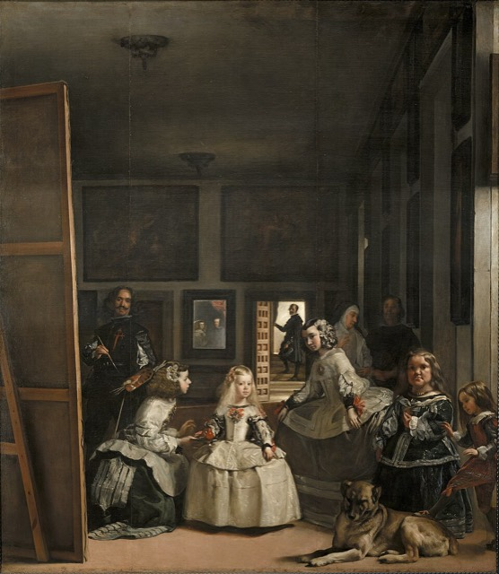
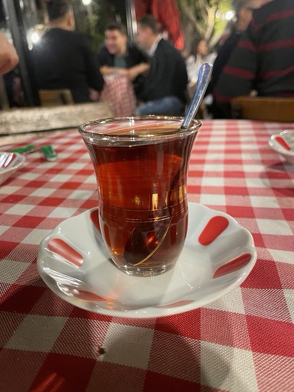
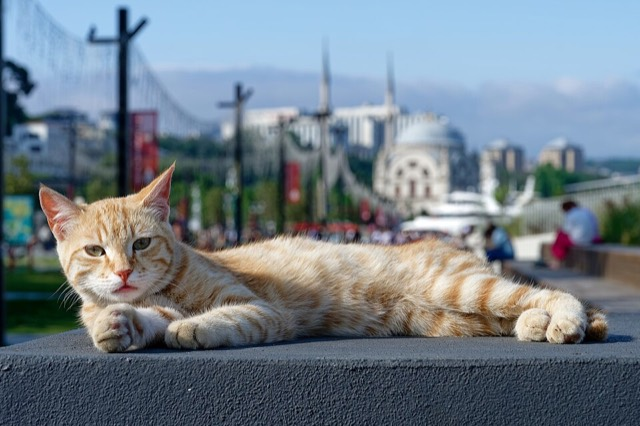
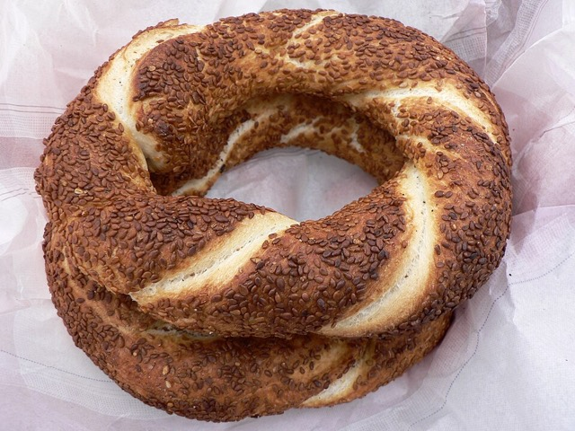
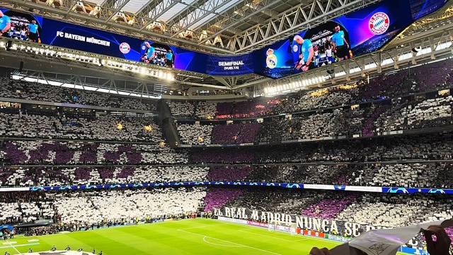
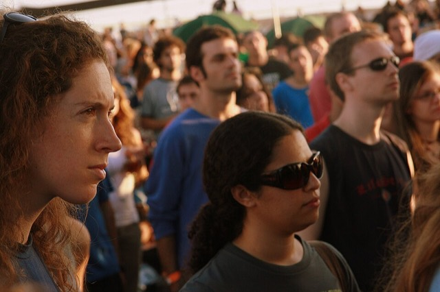

presente · pretérito perfecto · pretérito indefinido
| hablar | comer | vivir | |
|---|---|---|---|
| yo | hablo | como | vivo |
| tú | hablas | comes | vives |
| él, ella, usted | habla | come | vive |
| nosotros/as | hablamos | comemos | vivimos |
| vosotros/as | habláis | coméis | vivís |
| ellos, ellas, ustedes | hablan | comen | viven |
Solo verbos en -ir.
Solo un verbo.
⚠︎ yo quero → yo quiero · nosotros puedemos → nosotros podemos
haber + -ado / -ido
| yo | he | hablado comido vivido |
|---|---|---|
| tú | has | |
| él, ella | ha | |
| nosotros | hemos | |
| vosotros | habéis | |
| ellos, ellas | han |
hoy · esta semana · alguna vez · nunca
| -ar | -er / -ir | |
|---|---|---|
| yo | hablé | comí |
| tú | hablaste | comiste |
| él, ella | habló | comió |
| nosotros | hablamos | comimos |
| vosotros | hablasteis | comisteis |
| ellos, ellas | hablaron | comieron |
ayer · el lunes · la semana pasada · en 2024
⚠︎ me he enamorado · he me enamorado
Cinco textos pequeños. Toca un bloque y después una frase del mapa: aparece en ese bloque.
hay + un / una / dos / muchos + cosa
⚠︎ hay el Retiro → el Retiro está en Madrid · no hay playa (sin un / una)
+ de Madrid / de Estambul / del mundo

✍︎ Now write it in Spanish in block 4.
Bloque 5 · para hablar con tus amigas
| (a mí) | me | gusta + una cosa / verbo gustan + cosas |
|---|---|---|
| (a ti) | te | |
| (a él, a ella, a mi padre) | le | |
| (a nosotros) | nos | |
| (a vosotros) | os | |
| (a ellos, a mis padres) | les |
⚠︎ yo gusto el té → me gusta el té · me gusta los gatos → me gustan los gatos









Everest: Luca Galuzzi, CC BY-SA 2.5 · Estambul: SegLig, CC BY 4.0 · Santa Sofía: Arild Vågen, CC BY-SA 3.0 · Prado: Oilisab, CC BY-SA 4.0 · Torre de Cristal: Carlos Delgado, CC BY-SA 3.0 · Retiro: David Adam Kess, CC BY-SA 3.0 · Guepardo: Mark Dumont, CC BY 2.0 · Flamenco: Raymonst3, CC BY-SA 4.0 · Toros: Jan Kranendonk, CC BY-SA 4.0 · Tortilla: Mentxuwiki, CC BY-SA 4.0 · Las Meninas: Diego Velázquez, dominio público · Té: eXploration Etoile, CC0 · Gato: Jakub Hałun, CC BY 4.0 · Simit: «Simit-2x.JPG», CC BY-SA 3.0 · Bernabéu: Zoser, CC BY 4.0 · Concierto: Asaf Antman, CC BY 2.0
Dos dedos para mover el mapa y hacer zoom. Un dedo para tocar: una frase va a tu texto.